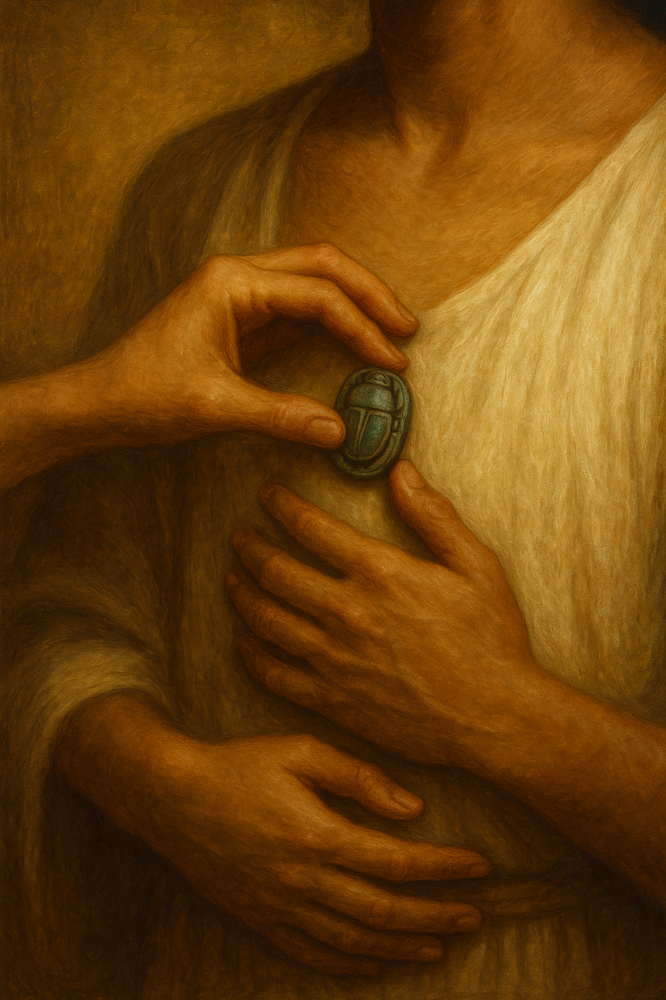

Papyri, Ink & Secrets
Published on May 25, 2025
There is something sacred about papyrus. Not just because it’s old, or fragile, or pressed with the marks of ink from three thousand years ago—but because it speaks. It carries the voices of the ancient dead. Their everyday moments, their jokes, their anger, their longing.
When we touch papyri, we touch lives.
I still remember the first time I held one in my gloved hands—a letter from the Ramesside period, inked in flowing hieratic. I couldn’t read a single word of it. Worse still, I wasn’t even sure I was holding it the right way up.
But something about that moment changed me. I got the publication rights for the text, spent my last bit of money on a sleeping bag, and moved into the library. For weeks, I slept under my desk and poured over the text by day. Months later, I had transcribed and translated the letter—my very first text publication.
It was exhausting, humbling, and exhilarating.
Because translating a papyrus is not just about deciphering signs. It’s about listening to someone else’s voice across time and knowing you’ll never quite catch all of it. Something is always just out of reach—a word smudged, a verb uncertain, a cultural reference lost in the flood of history. But you keep listening anyway.
As Egyptologists, in some strange way, we do what the ancient scribes did. We collect, preserve, and copy texts. We safeguard knowledge that was considered sacred then—and is still sacred now. The ink may fade, but the intent survives.
Some papyri are bureaucratic: tax records, grain accounts, inventories. Others are poetic or personal—love letters, lullabies, insults scribbled on ostraca, or quiet requests to a god. And buried in the folds of each one is a human presence.
And that’s what makes this work so meaningful. In every fragile sheet of papyrus, there is a voice that was never meant to disappear.
← Back to Blog